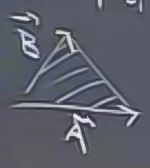
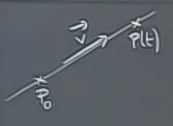

Ders 7
Bugünün konusu "herşey". Şimdiye kadar gördüğümüz her şey yani. Vektörleri gördük, noktasal çarpımları (dot product) gördük. İki vektörün noktasal çarpımı
$$ \vec{A} \cdot \vec{B} = \sum a_ib_i$$
şeklindedir, yani o vektörlerin tüm elemanlarının sırasıyla birbiriyle çarpılıp toplanmasıdır. O da su ifadeye eşittir
$$ |\vec{A}||\vec{B}| \cos \theta $$
Noktasal çarpımı açıları ölçmek için kullanabiliriz, eğer $\cos \theta$ terimini tek başına bırakırsak, geri kalanları çözebiliriz. Bu şekilde iki vektörün dik olup olmadığını da anlarız. Çünkü o zaman sonuç sıfır olur, ve $\cos \theta = 0$ ise açı dik demektir.
Gördüğümüz bir diğer kavram çapraz çarpım (cross product) kavramıydı.
$$ \vec{A} \times \vec{B} = \left|\begin{array}{rrr} \vec{i} & \vec{j} & \vec{k} \\ a_1 & a_2 & a_3 \\ b_1 & b_2 & b_3 \end{array}\right| $$
Eşitliğin sağındaki determinant işareti, matris işareti değil, buna dikkat. Çapraz çarpımın uygulamalarından biri olarak uzayda bir üçgenin alanını bulmayı söyleyebiliriz.

Bu alan
$$ \frac{1}{2}|\vec{A} \times \vec{B}| $$
ile hesaplanır. Çünkü $|\vec{A} \times \vec{B}|$'nin sonucu bir paralelkenar verir, onun yarısı aradığımız üçgenin alanıdır.
Çapraz çarpımın bir diğer uygulama alanı ise, iki vektöre aynı anda dik olan üçüncü bir vektörü bulmaktır. Ona bağlantılı olarak bir düzleme (plane) dik olan bir vektörü bulmak, yani "normal vektörü" bulmaktır. Düzlemin formülü nedir?
$$ ax + by + cz = d $$
Normal vektör ise $\vec{N} = < a,b,c >$ olarak gösterilir. Normal vektörün değerleri düzlem formülüne katsayı olarak giderler.
Çizgiler
Çizgilerin formülü için bir başlangıç noktasına ve o çizgiye paralel olan bir vektöre ihtiyacımız var.

$$ P(t) = P_0 + t \vec{v} $$
Problem 3
$$ A = \left[\begin{array}{rrr} 1 & 3 & 2 \\ 2 & 0 & -1 \\ 1 & 1 & 0 \end{array}\right] $$
Bize matrisin tersi verilmiş ve iki öğesi boş bırakılmış
$$ A^{-1} = \frac{1}{2} \left[\begin{array}{rrr} 1 & .. & .. \\ -1 & -2 & 5 \\ 2 & 2 & -6 \end{array}\right] $$
Yani bizden beklenen tersine çevirme işlemini yapmak, ama boş bırakılan değerlere bakalım, bu noktada bizden kafayı çalıştırıp, sadece o noktalara tekabül eden minörleri hesaplamamız bekleniyor. O minörler hangileri? Şunlar (x ile işaretli olanlar).
$$ A = \left[\begin{array}{rrr} .. & .. & ..\\ x & .. & ..\\ x & .. & .. \end{array}\right] $$
çünkü devriğini alma işlemini yapınca, o elemanlar A'nın tersindeki nokta nokta olan yere geçmiş olacaklar.
Minörleri hesaplarsak
$$ A = \left[\begin{array}{rrr} .. & .. & ..\\ -2 & .. & ..\\ -3 & .. & .. \end{array}\right] $$
Şimdi kofaktörleri hatırlayalım (Ders 3)
$$ \begin{array}{rr} + - + \\ - + - \\ + - + \end{array} $$
O zaman
$$ A = \left[\begin{array}{rrr} .. & .. & ..\\ +2 & .. & ..\\ -3 & .. & .. \end{array}\right] $$
Devriğini alalım
$$ A = \left[\begin{array}{rrr} .. & +2 & -3\\ .. & .. & ..\\ .. & .. & .. \end{array}\right] $$
Determinant'a bölelim. Determinantın ne olduğu verilmiş, 2, ama bu değer zaten $1/2$ olarak $A$'nin tersi önünde duruyor. O zaman 2 ve -3 değerlerini olduğu gibi boş olan yerlere taşırız.
$$ A^{-1} = \frac{1}{2} \left[\begin{array}{rrr} 1 & 2 & -3 \\ -1 & -2 & 5 \\ 2 & 2 & -6 \end{array}\right] $$
Örnek
$MX = 0$
Sistem
$$ x + 3y + z = 0 $$
$$ 2x - z = 0$$
$$ x + y = 0 $$
Eğer noktasal çarpım olarak yazarsak
$$ < x,y,z > \cdot < 1,3,1 > = 0 $$
$$ < x,y,z > \cdot < 2,0,-1 > = 0 $$
$$ < x,y,z > \cdot < 1,1,0 > = 0 $$
Bu ifade bize aslında üstte sağdaki üç vektöre dik olan bir vektörü bulmamızı
söylüyor, çünkü o vektörle $< x,y,z >$ noktasal çarpımı sıfır sonucu veriyor. İki vektöre dik üçüncü bir vektör bulmayı zaten biliyoruz, ilk iki vektör $< 1,3,1 >$ ve $< 2,0,-1 >$'i kullanarak bunu yapabiliriz, onların çapraz çarpımını alırız (üçüncü denklemi atlıyoruz -aslında hangi iki vektörü seçtiğimiz önemli değil-),
$$ \left|\begin{array}{rrr} \vec{i} & \vec{j} & \vec{k} \\ 1 & 3 & 1 \\ 2 & 0 & -1 \end{array}\right| = < -3,3,-6 > $$
Bir denklem atladık, 3 boyutta hepsi birbirine dik en fazla üç tane vektör olabilir, o zaman iki vektöre dik üçüncü bir vektörü çapraz çarpımla elde edersek, bu vektör atladığımız üçüncü vektöre paralel demektir.
Tüm çözümler de şöyledir
$$ x = -3t $$
$$ y = 3t $$
$$ z = -6t $$
Yukarı